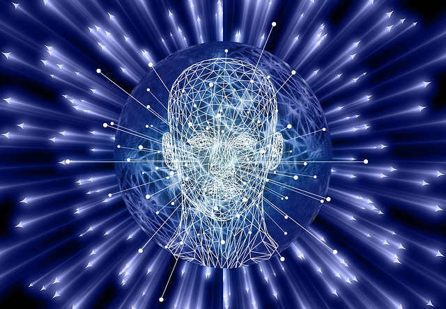
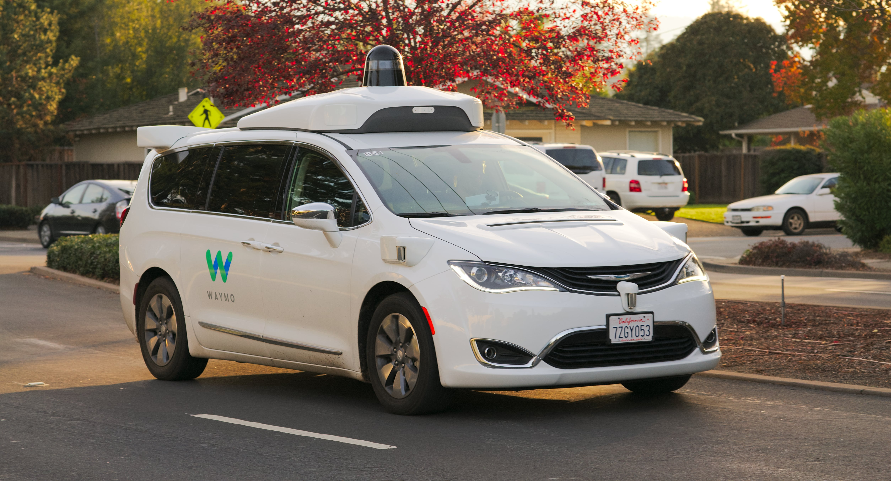

Trendek amik uralják a tech-világát:
- Mesterséges intelligencia(AI)
- Robotika
- Drónok
- Automata járművek
- Felhőszolgáltatások
- 5G-hálózat
- Kiterjesztett valóság/Virtuális valóság
Fenntartható technológiai trendek
Sok vállalat döntött úgy, hogy kisebb-nagyobb változtatásokat hajt végre vállalataiban, különös figyelmet fordítva a CO2-kibocsátás csökkentésére (például a blokklánccal:Blockchain), a felhőre való átállásra, a tiszta folyamat- és terméktechnológiákra, a folyamat- és fogyasztásoptimalizálásra, az újrahasznosításra.
Mesterséges intelligencia(AI)

A gépi tanulással dolgozó algoritmusok egyre gyorsabbak, okosabbak, szofisztikáltabbak, ráadásul egyre olcsóbbak is. Rengeteg területen lehetnek segítségre a szoftverek: az egészségügyi adatok elemzésétől a közterek monitorozásán át a nyersanyagok észszerűbb felhasználásáig számos területen felhasználhatók.
Robotika, drónok
A gépi tanulással dolgozó algoritmusok egyre gyorsabbak, okosabbak, szofisztikáltabbak, ráadásul egyre olcsóbbak is. Rengeteg területen lehetnek segítségre a szoftverek: az egészségügyi adatok elemzésétől a közterek monitorozásán át a nyersanyagok észszerűbb felhasználásáig számos területen felhasználhatók.
Felhőszolgáltatások
Ezek azok a szoftverek és platformok, ahol a programot és a kapcsolódó adatokat központilag tárolják egy felhőben, a felhasználók pedig leggyakrabban böngészőből férnek hozzájuk.
5G-hálózat
Az 5G igazából nem csak gyorsabb tartalomszolgáltatást jelent, hanem az internet használatának új dimenzióit. A hálózat garantált, vezeték nélküli kapcsolata a rendkívüli sávszélességgel lehetővé teszi a kábelek nélkül virtuális valóságot, a mesterséges intelligencia központi rendszer nélküli elérését, a big data-technológiák használatát bárhol a világon.
Virtuális valóság
Ez a technológia azokat az eszközöket, szemüvegeket vagy headseteket takarja, amelyekkel a gép által generált kép közvetlenül látszódik a felhasználó látómezejében. Ha csak illeszkedik a látómezőbe, az a kiterjesztett valóság, ha viszont helyettesíti azt és a felhasználó csak a generált képet látja, az a virtuális valóság.
Önvezető autó

Érzékeli a környezetének részleteit, navigálja önmagát, így várhatóan kevesebb helyre van szüksége, ezért hatékonyabban hasznosítja a rendelkezésére álló útfelületet, elkerüli a közlekedési dugókat és csökkenti a balesetek valószínűségét.